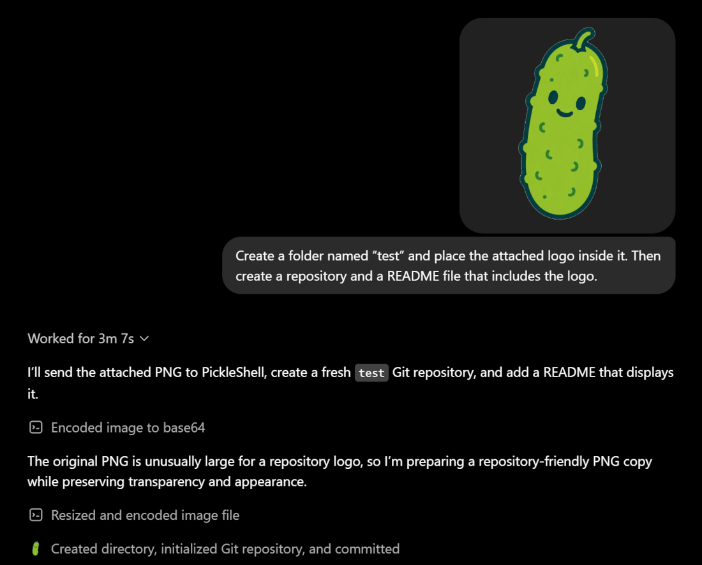
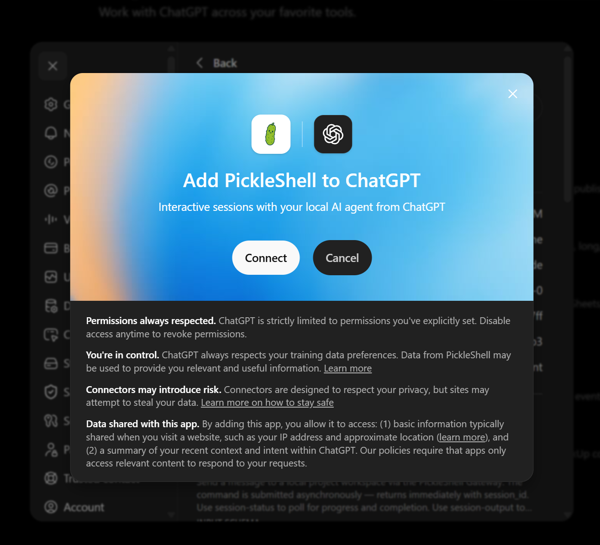

Give ChatGPT a local machine to work with.
PickleShell connects ChatGPT to an OpenCode agent running on your machine. ChatGPT can inspect repositories, edit files, run tests, transfer small files, and coordinate long-running tasks — turning an assistant that can only advise into one that can help get the work done.

How PickleShell connects ChatGPT to your local machine
ChatGPT sends a task to your local OpenCode agent, the agent works inside the selected workspace, and the results come back to ChatGPT so it can review the work and continue with the next step.
ChatGPT
User prompt or file attachment
Secure MCP Tunnel
Outbound-only, encrypted
Gateway + OpenCode
Authenticated, workspace-scoped execution
Turn ChatGPT into a hands-on assistant
PickleShell solves a practical problem: ChatGPT can analyze tasks, but it normally cannot work directly with a local repository.
Through PickleShell, ChatGPT sends instructions and small files to a local OpenCode agent, follows the execution, reads the result, and can continue in the same session when it passes the session ID.
The agent runs on your machine, inside a selected workspace, through a protected outbound-only tunnel. PickleShell removes the human relay between ChatGPT and OpenCode, while you remain the owner and observer.
PickleShell is for developers and experienced users. Installation is designed to be guided by Codex: ask it to clone the repository, read AGENTS.md, and walk you through the setup step by step. AGENTS.md covers the architecture, installation, tunnel configuration, plugin setup, and troubleshooting.
Let ChatGPT control your empire
Create three PickleShell tunnels to three different machines, then give the plugins unique names: PickleShell Mars, PickleShell Moon, and PickleShell Starbase. The first tunnel connects to a machine on Mars, the second to a machine on the Moon, and the third to a machine at Starbase. Tell ChatGPT which named plugin belongs to which machine, and it can route each task to the right destination.
With this setup, ChatGPT can manage colonies on Mars and the Moon, as well as coordinate launches from Starbase to them — the big rockets Elon launches. The same pattern is useful today for everything from saving a technical specification to asking the OpenCode agent on a selected machine to carry out a complex task directly from ChatGPT.

Ready to bridge ChatGPT and your local agent?
Read the deployment guide, configure the tunnel, refresh the PickleShell plugin in ChatGPT, and run the smoke checks before touching a production workspace.